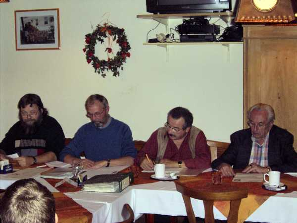
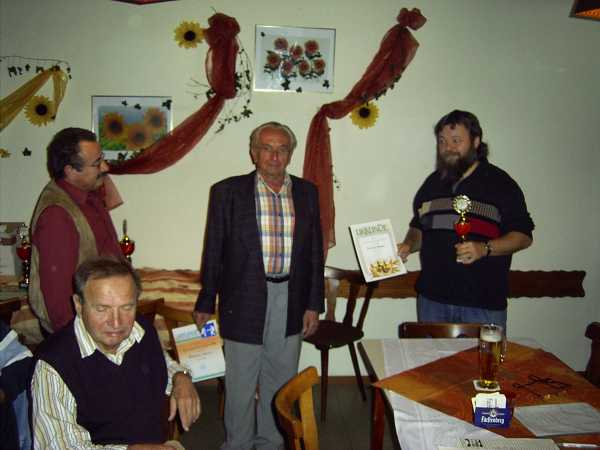
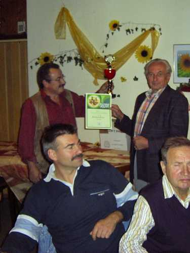
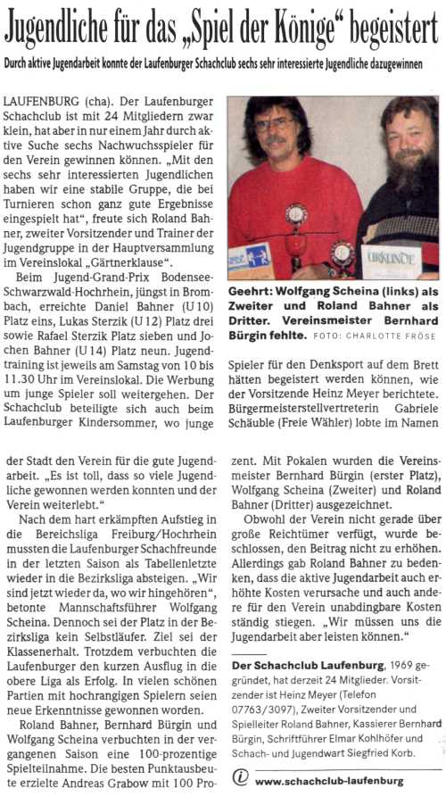

Andächtig lauschende Zuhörer bei der Jahreshauptversammlung.
Auch zwei Jugendspieler sind dabei. Hinten links Gabriele Schäuble,
die Repräsentantin der Stadt Laufenburg.

Die Berichte des Vorstands werden vorgetragen.
Von links: H. Meyer, E. Kohlhöfer und S. Korb

Dem Vorstand frontal gegenüber. Leider fehlte Kassier B. Bürgin.

Siegerehrung für die Vereinsmeisterschaft 06.
Elmar und Siegfried gratulieren Roland Bahner zum dritten Platz.

Wolfgang Scheina wurde zweiter.

Bernhard Bürgin wurde der Siegerpokal
zunächst in Abwesenheit überreicht.

Hier unser Vorstand Heinz Meyer,
der Bernhard zwei Tage später den Pokal überbringt.

Nochmals Platz 2 und 3 bei der Aufstellung zum Pressefoto.

Frau Schäuble und die inzwischen zur Abholung ihres Sohns Jochen
eingetroffene Frau Matt sind sichtbar amüsiert.
Und so berichtete die Presse:
Südkurier vom 13.10.06:
(auf drei Spalten umgebrochen)

Badische Zeitung vom 16.10.06
(auf zwei Spalten umgebrochen)
